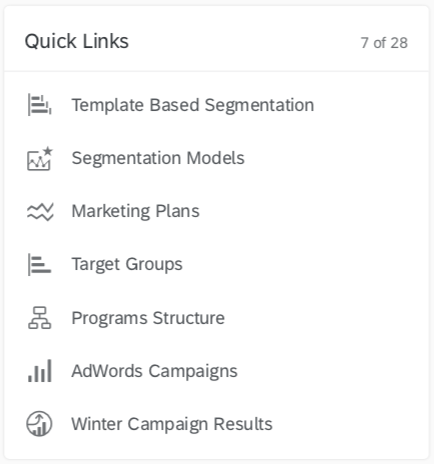
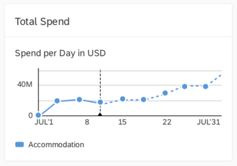
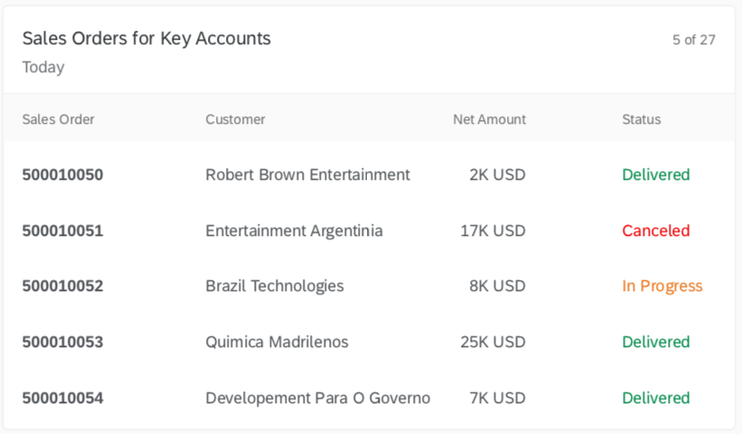

Integration Cards Overview
Integration cards present a new means to expose application content to the end user in a unified way.Depending on the use cases cards can be easily embedded in a host environment, such as application, dashboard, or any HTML page. A variety of card types can be configured by a simple JSON configuration (schema) without the need to write code for UI rendering. In this way, even users without programming skill are being enabled to create new cards according to their special needs.
Card Configuration
Based on a JSON schema definition, the card author defines either static or dynamic card content from the REST services. The upcoming design-time capabilities of the cards will help authors in the future.Host Environment
The host environment is responsible for the card’s integration. Action events allow the host environment to react on user interactions within the card. For HTML environments UI5 provides two ways of integration: as a Custom Element or as a UI5 control.Card Types
List Card
Analytical Card
Table Card
Object Card
Timeline Card
Component Card
For more flexible implementations of card content, the component card allows the integration of UI5 Components as content. Such cards could only be rendered within an HTML host environment.UX Concept
- Cards are representations of an app or page and offer content to users in a specific context.
- Cards contain a certain set of information from an app or page and can also offer functionality.
- Cards can be a mash-up of multiple apps (such as a list card with links).
- An app or page can be represented by one card, or by multiple cards that each expose different aspects.
- Users get direct insights without leaving the current screen, while cards can still offer further navigation options.
- Cards are composite controls that follow a predefined structure.
Cards consist of:
- A card container - includes a background and a border that hold the header and the content.
- A header - it can have a title, a subtitle, an icon, and a status. If the header is of type Numeric, it may have different attributes describing numeric indicator, such as KPI.
- Content - depends on the card type.
Characteristics
- Technology agnostic - Different technologies can easily parse the manifest.json file and render a card based on it.
- Self-contained - Everything needed to render the card and make it actionable is described in the manifest.json (including data and functionality).
- Reusable - The manifest.json can be easily parsed, processed, and saved in different layers of an application. It is also easily shareable.
Developing Cards
To create a card you should create a manifest.json file that stores all configurations (card structure, data, functionality, etc...). The sap.card is the namespace responsible for the card configuration inside the manifest file.